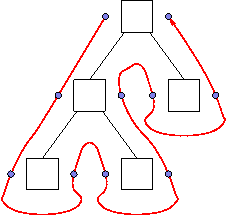

Chains relate computations in left-to-right depth-first order within certain subtrees.

Typical Error Situation
X.mychain = onenewValue(newval);
instead of
X.mychain = addoneValue(X.mychain, newval);
Back to Typical Eli Errors %FOOT%